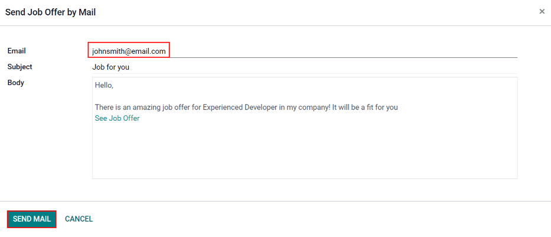

Ver trabajos¶
To see all job positions that are actively recruiting candidates, click the View Jobs button on the main Referrals dashboard. This presents all job positions, with each individual job presented with its own card.

Cada cuadro de puesto de trabajo contiene la siguiente información:
The title of the job position. This information is taken from the Job Position field of the job form.
The number of Open Positions being recruited. This information is taken from the Expected New Employees field of the Recruitment tab of the job form.
The points a user earns when an applicant applies for the position.
The job description detailing the job position. This information is taken from the Job Position tab of the job form.
Para ver todos los detalles de un puesto de trabajo, haga clic en el botón Más información del recuadro correspondiente. Esto abre la página web del puesto en una nueva pestaña del navegador. Esto es lo que un candidato ve antes de solicitar un puesto.
Nota
Only published job positions are visible in the Referrals app. To check which job positions are published or not, refer to the Puestos de trabajo documentation.
Referir a amigos¶
To share a job position with someone, click the Refer Friend button on the specific job position card. A pre-configured Send Job Offer by Mail pop-up window appears. Enter the recipient’s email address in the Email field.
The Subject and Body are populated using a default template. The
Subject Job for you is present, by default, but can be modified, if desired.
The specific title of the job position populates the Job Position placeholder in the email body.
The See Job Offer text in the email body is an individualized tracking link to the specific job
position listed on the website.
When the prospective employee receives the email, the link sends them to the job position page, where they can apply for the position, and the person who referred them is tracked in the Referrals application.
If desired, add any text or closing salutation to the email body. When all edits have been made, click Send Mail to send the email, or click Cancel to close the pop-up window.
Compartir un trabajo¶
Other than sending an email, job positions can be shared, via social media platforms, and by tracking links to the job position. At the bottom of each job position card are four icons, and corresponding tracking links, that can be used to share the job position, keeping track of applicants in the Referrals application.

Enlace¶
To share the job position with a customized tracking link, click the Share Now button with the (link) icon above it. A Link to Share pop-up window appears with the tracking link. Click Copy to copy the link. After the link is copied, click the Close button to close the pop-up window. Next, share the link with the prospective employee.
Facebook¶
To share the job position using Facebook, click the Share Now button with the (Facebook) icon above it.
If the user is already logged into Facebook, when the the Share Now button is clicked, a Share on Facebook page loads in a new tab, with the link populated in the main body of the new post in a pop-up window. If the user is not already logged in, a log-in screen loads, instead, prompting the user to log-in to Facebook first.
Type in any additional information to add to the post, then share the job position using the available options in Facebook.
X (antes Twitter)¶
A job position can also be shared on X. Click the Share Now button with the (X) icon above it.
If the user is already signed-in to X, when the Share Now button is clicked, an X page loads in a new tab with a pre-populated message ready to post, in a draft pop-up window. If the user is not already signed-in, a sign-in screen loads instead, prompting the user to first sign-in to X.
El mensaje predeterminado es:
Amazing job offer for (Job Position)! Check it live: (link to Job Position)
Type in any additional information, or make any edits to the message, then share using the available options in X.
LinkedIn¶
To share a job position on LinkedIn, click the Share Now button with the (LinkedIn) icon above it.
If the user is already logged into LinkedIn, when the Share Now button is clicked, a new tab loads in LinkedIn, with a link to the job position at the top. If the user is not already logged in, a log-in screen loads instead, prompting the user to log-in to LinkedIn first.
The job position can be shared either in a public post, or in a private message to an individual (or group of individuals).
Type in any additional information, or make any edits to the message or post, then share using the available options in LinkedIn.
Enviar un correo a un amigo¶
Another way to share job opportunities is to share the entire current list of open job positions, instead of one job position at a time. To do this, navigate to the main dashboard. Click the Email a friend button at the bottom of the screen. A Send Job Offer by Mail pop-up window appears.
Enter the email address in the Email field. The email can be sent to multiple recipients by separating each email address with a comma followed by a single space. The Subject is pre-configured with Job for you, but can be edited.
The email Body is also populated with pre-configured text. The text that appears is:
Hola,
Hay algunas ofertas de trabajo increíbles en mi empresa. Echa un vistazo, te pueden interesar:
Ver ofertas de trabajo
The See Job Offers text is a tracking link to a complete list of all job positions currently being recruited for. Add any additional text and make any edits to the message body, if necessary. Then, click Send Mail to send the email. This sends the message, and closes the window.